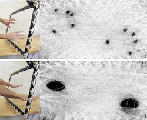

 VANCOUVER, BC. -- Texas A&M University's Interface Ecology Lab is exhibiting its flagship embodied interface, ZeroTouch, at the ACM CHI 2011 Conference. ZeroTouch is a unique optical multi-touch sensing technology that enables zero-force, zero-thickness, completely transparent multi-finger sensing. Unique characteristics enable trivial display integration as compared to other optical multi-touch solutions. ZeroTouch provides a high-framerate, high-resolution solution for robust optical multi-touch sensing in a thin, transparent form-factor.
In comparison with the popular capacitive sensors of Apple's iPhone and iPad, interaction via ZeroTouch requires no pushing by the hand and fingers, greatly reducing muscle fatigue. New forms of free air interaction are also enabled, with more precision, for example, than with Microsoft's Kinect.
ZeroTouch research is undertaken with support from the Human-Centered Computing program of the National Science Foundation. PSOC components are donated by Cypress Semiconductor.
 At the 2011 Conference on Human Factors in Computing Systems, the premiere venue for cutting-edge HCI research and technologies,
the Interface Ecology Lab is presenting ZeroTouch in an interactive exhibit. We are showcasing the unique capabilities of this new natural
user interface sensing modality with three applications,
intangibleCanvas, Hand + Pen in Hand Command, and ArtPiles.
At the 2011 Conference on Human Factors in Computing Systems, the premiere venue for cutting-edge HCI research and technologies,
the Interface Ecology Lab is presenting ZeroTouch in an interactive exhibit. We are showcasing the unique capabilities of this new natural
user interface sensing modality with three applications,
intangibleCanvas, Hand + Pen in Hand Command, and ArtPiles.
- intangibleCanvas uses the ZeroTouch sensor as a precision free-air interactive input modality, allowing users to reach through the sensor and paint on a projected screen. The embodied interaction enables painting with the elbows, the arms, and the head as well as the fingers. intangibleCanvas affords control over brush style, color, and ink flow through a multi-modal iPhone interface held in the non-dominant hand.
- Pen in Hand Command is a multi-touch and stylus enabled real-time strategy game. The combination of pen and touch allows for completely new ways of interacting with the game, enabling the user to directly manipulate the map and control and direct units with a level of precision not found in traditional rts interaction. The dominant hand fluidly switches between stylus and direct multi-touch interaction, while the non-dominant hand uses multi-touch to activate command modes. It is built on the open source Zero-K game engine.
- ArtPiles is a new curatorial tool for museums and art galleries that gives curators new ways to manipulate large collections of art works when designing exhibits, and historians new ways to organize the collections. Each art work is represented by an image, enhanced with descriptive metadata. The metadata is derived with the Interface Ecology Lab's open source meta-metadata language and architecture. ArtPiles' combination of pen and multi-touch interaction enables new visual and semantic manipulation of the art collection, which are not possible with the pen or touch modalities alone. This research integrates the fields of information semantics, information visualization, and interaction design.
Zerotouch is a point-to-point visual hull sensing technology, meaning it uses hundreds of modulated infrared sensors and several infrared LEDs to create a series of invisible light beams that cross the screen. When these beams are interrupted, it means something has touched the screen, and we can visualize the interruption of the beams to reconstruct the visual hull of any objects inside the sensor frame.
NEW YORK, NY. -- In collaboration with Zigelbaum+Coelho, ZeroTouch was used at Fast Company's Most Creative People in Business 2011 Event, sponsored by Cartier.
Timepiece Explorer, a piece commissioned by Publicis Modem for Cartier, enables visitors to explore Cartier's newest watch technology through a gestural video browser powered by ZeroTouch. Check out the video embedded below for more details.
Timepiece Explorer from Zigelbaum + Coelho on Vimeo.
For more information, please see the publications and video below.
Email zerotouch at ecologylab.net.
publications
Moeller, J. and Kerne, A., ZeroTouch: An Optical Multi-Touch and Free-Air Interaction Architecture, Proc. CHI 2012, full paper, in press.
[video]

Moeller, J. and Kerne, A., ZeroTouch: A Zero-Thickness Optical Multi-Touch Force Field, CHI Interactivity -- Extended Abstracts of the 29th International Conference on Human factors in computing systems, May 7-12, 2011, Vancouver, BC, CA.
[video]